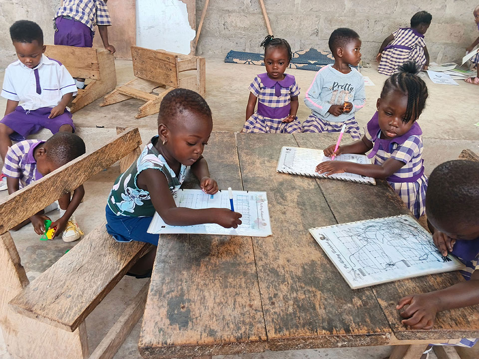
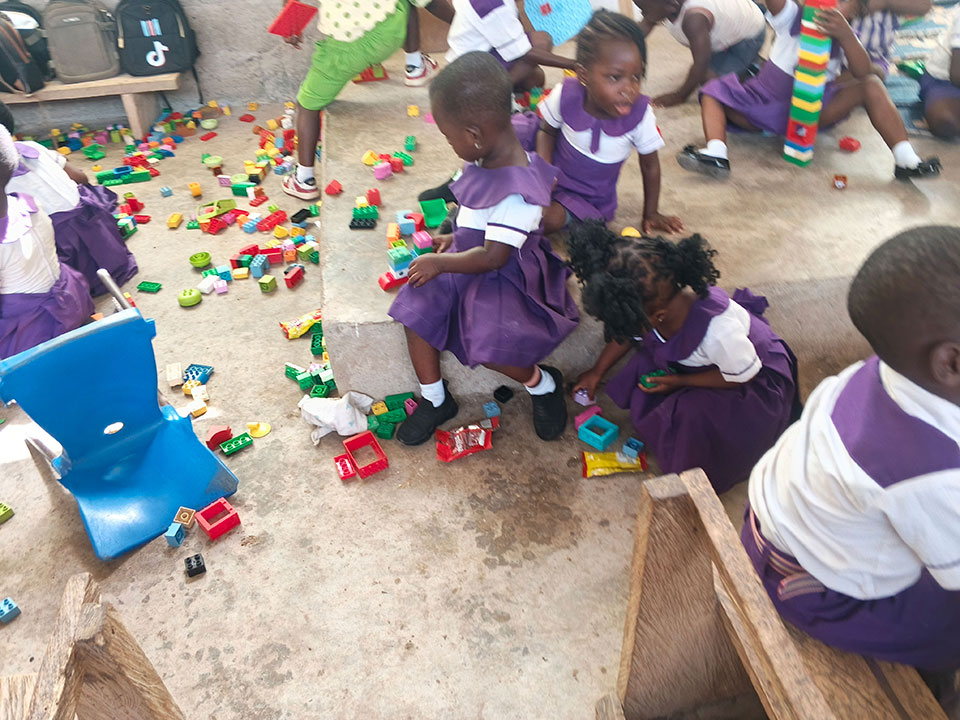
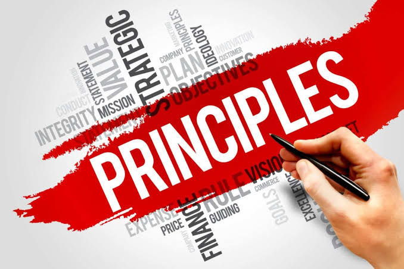
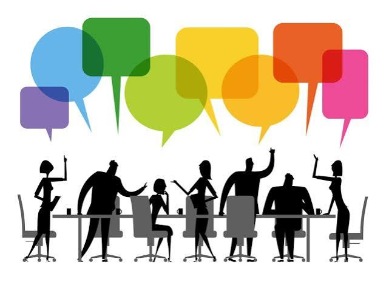
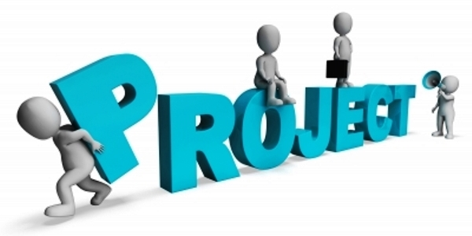
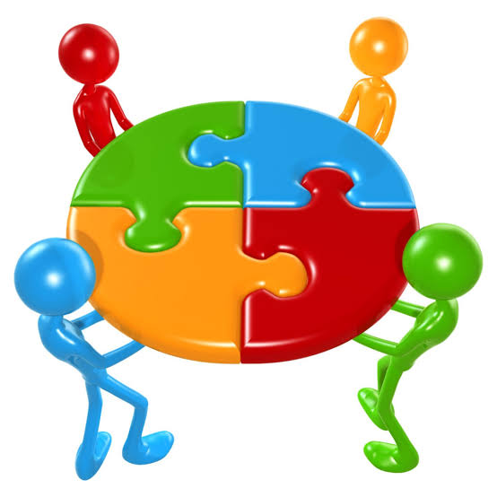
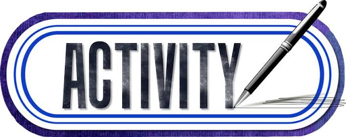
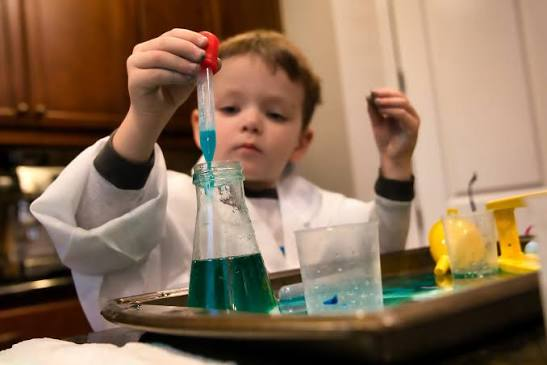

Key Teaching Law: Children are not small adults. Their brains cannot process multiple ideas at the same time, and they forget very quickly if we do not connect lessons to things they can see, touch, or already know.
A child's memory system operates in three simple steps:
1. The Spotlight (Sensory Attention): If the class is noisy or the blackboard is cluttered, the child's spotlight lands on the wrong thing.
2. The Desk (Working Memory): This desk is tiny! It can only hold 2 to 4 items at once. If you give 5 instructions, the desk collapses and the child gets confused.
3. The Storage Room (Long-Term Memory): Once a child practices an idea repeatedly with meaning, it gets stored here permanently.
Attention Span Calculator
A child can only listen quietly for 2 to 3 minutes per year of age before their brain needs an action.
Maximum Direct Lecture Time:
14 – 21 minutes
After this time, stop talking and give them a 2-minute quick task (write 1 word, turn and talk to a partner, or solve 1 problem).
4 Golden Rules for Behavior Management
1. State What to DO, Not What to STOP
Never say: "Don't make noise!" Say: "Voices at zero, eyes on the board." Children must visualize the action to execute it.
2. Correct Privately, Praise Publicly
Shouting a pupil's name across the room triggers fear and embarrassment. Walk over quietly, give the instruction in a low voice, and move on.
3. Praise the Effort, Not the Brain
Avoid: "You are so intelligent!" Say: "I like how you kept working until you got question 4 right." This builds perseverance.
4. Transitions Need a Signal
Never teach while pupils are opening books or switching periods. Use a 3-clap rhythm or say: "Pencils down in 3, 2, 1." Wait for complete quiet.
Teaching by Age Group (Ages 4–15)
Click any age group below to view how their brain works and what you must do in class:
KG & Nursery (Ages 4–6): The Concrete HandlersNeed Physical Items
How they think: If they cannot see it, hold it, or taste it, it does not make sense to them. They cannot grasp numbers as abstract symbols alone.
Rule for Teachers: Use bottle caps, pebbles, seeds, and real fruits. Teach "3 mangoes plus 2 mangoes" by physically putting them together before writing 3 + 2 = 5 on the board.
Lower Primary / Class 1–3 (Ages 7–9): The Rule ObserversCraving Fairness
How they think: Logic is beginning to form. They love clear rules and fairness. They get upset if one pupil gets away with something another was punished for.
Rule for Teachers: Keep board layouts neat and uniform every day. Give 1 instruction at a time. Never announce a reward or penalty you do not strictly enforce.
Upper Primary / Class 4–6 (Ages 10–12): Emerging ThinkersPeer Sensitive

How they think: They can solve multi-step problems and work in groups. They begin to care deeply about what their classmates think of them.
Rule for Teachers: Never laugh at a wrong answer or allow others to tease them. Use "Think-Pair-Share" (think alone for 1 minute, discuss with seatmate for 1 minute, then share with class).
JHS 1–3 / Form 1–3 (Ages 13–15): The Identity BuildersAbstract & Proud
How they think: Capable of deep abstract thought, debates, and personal opinions. However, their brain is reorganizing; emotional outbursts and sensitivity to shame are high.
Rule for Teachers: Treat them with genuine respect. Give them responsibilities (e.g., lab captains, group leaders). Avoid power struggles in front of the whole class.
Cognitive Load Theory (The "Water Cup" Model)
A child's working memory is like a plastic cup. It can only hold so much water before it overflows. When it overflows, learning stops completely.
Toggle Classroom Habits:
The Golden Rule: Clear out the Red Waste (Extraneous Load) so the child has room for Green Understanding (Germane Load)!
Waste (Clutter)
True Learning
Lesson Content
Cup is safe. Brain is learning!
Theory-to-Practice Checklist
Review this table before preparing your daily lesson notes and board work:
Classroom Area
Mistake to Avoid
Actionable Best Practice
The Blackboard
Writing everywhere at random, squeezing notes in corners, adding fancy decorative borders.
Zone the board: Date & subject top-left, key terms top-right, clean step-by-step notes in the center.
Giving Instructions
"Take out your exercise books, turn to exercise 4 on page 20, copy question 1, and use a ruler."
Give 1 step at a time: "Open your book to page 20." Wait until all pencils are down. Then give step 2.
Reading & Talking
Talking and explaining while pupils are trying to read a passage in their books.
Read it out loud together first, OR let them read silently. Never talk over their reading.
Checking Understanding
Asking: "Do you all understand?" (Children always answer "Yes Sir!" even when confused).
Ask 2 pupils: "Kofi, what is the first step we do next?" or have everyone hold up thumbs up/thumbs down.
Teaching Math/Science
Writing symbols and formulas immediately without demonstrating with real objects.
Use real things first (paper strips, coins, stones), draw diagrams second, and write formulas last.
Classroom Scenario Challenge Lab
Put your knowledge to the test. Read the 5 real school situations below and choose the best pedagogical action:
Scenario 1: The Noisy Class Transition
It is 10:30 AM. Break time has just ended. Class 4 pupils are noisy, drinking water, and running around the classroom. What should the teacher do?
Scenario 2: Teaching Equivalent Fractions to Class 2 (Age 7)
You want to teach that 1/2 is the same size as 2/4. What is the best way according to child psychology?
Scenario 3: The Board Design Trap
A teacher is preparing the chalkboard for an English grammar lesson. How should the board look?
Scenario 4: Handling an Embarrassed JHS 2 Student (Age 14)
A 14-year-old boy in JHS 2 gives a completely wrong answer during an ICT lesson. A few classmates snicker. What should you do?
Scenario 5: Multi-tasking Overload
A teacher gives a reading task by saying: "Open your science reader to page 45, look at diagram 3, write down two observations, and make sure your handwriting is cursive." What is wrong with this?
1. Methods of Teaching
Teaching methods generally fall along a spectrum between Teacher-Centered and Student-Centered approaches. The most effective educators do not strictly adhere to just one; they fluidly move between them based on the learning objective, the complexity of the material, and the needs of their students.
Direct Instruction (Teacher-Centered)
Direct instruction is highly structured and led entirely by the teacher. It involves explicit teaching, where you model a skill or explain a concept step-by-step before students practice it independently.
Best for: Introducing foundational concepts, teaching specific skills (like a mathematical formula or phonics), and ensuring strict safety protocols in a lab.
The Pitfall: Over-reliance leads to passive learning and disengagement. It should be a launchpad, not the entire journey.
Inquiry-Based Learning (Student-Centered)
Instead of presenting facts, the teacher poses open-ended questions, problems, or scenarios. Students must investigate, research, and construct their own understanding.
Best for: Developing critical thinking, scientific exploration, and teaching students how to find and evaluate information.
The Pitfall: Without proper scaffolding, students can become frustrated or overwhelmed if they lack the foundational knowledge to begin their inquiry.
Quick Tip: Inquiry-Based Learning is about acting like a detective to figure out why or how something works.
Project-Based Learning (PBL)
Students gain knowledge and skills by working for an extended period to investigate and respond to an authentic, engaging, and complex question or challenge.

Best for: Synthesizing multiple disciplines, building soft skills (collaboration, time management), and applying theory to real-world contexts.
The Pitfall: Assessment can be highly subjective, and ensuring equitable participation across group members requires active monitoring.
Quick Tip: Project-Based Learning is about acting like an engineer or manager to build or execute something over a longer period of time.
Cooperative Learning
This method structures classes into groups where students work together to maximize their own and each other's learning. Techniques like the Jigsaw Method—where each student becomes an "expert" on a sub-topic and teaches it to their group—fall under this umbrella.
Best for: Fostering empathy, improving communication skills, and allowing peer-to-peer instruction (which often bridges understanding gaps faster than teacher-led instruction).
The Pitfall: "Group work" without structured accountability often results in one student doing the majority of the heavy lifting.
Method Selection Matrix
To help you decide which approach to pull from your toolkit, use this baseline comparison:
Teaching Method
Your Role
The Student's Role
Cognitive Focus
Direct Instruction
Authority / Expert
Receiver / Replicator
Knowledge retention & skill acquisition
Inquiry-Based
Facilitator / Guide
Investigator
Critical thinking & problem solving
Project-Based
Consultant / Coach
Creator / Manager
Application, synthesis, & design
Cooperative
Architect / Observer
Collaborator / Peer-teacher
Social-emotional learning & communication
2. Direct Instruction (Teacher-Centered)
While Direct Instruction is the primary category on the pedagogical spectrum we discussed, it acts as an umbrella term for several specific classroom techniques where the teacher is the active provider of information and tightly controls the lesson.
The Lecture Method: The teacher verbally delivers content while students listen, observe, and take notes. It is highly efficient for transmitting a large volume of facts quickly, but it easily overflows the student's working memory "cup" if overused without breaks.
Demonstration: The educator physically models a process, skill, or experiment while students observe. This is essential when safety or precise technique is involved, such as writing a specific cursive letter on the board or safely lighting a Bunsen burner.
Explicit Teaching ("I do, We do, You do"): A highly structured, step-by-step breakdown of a new concept. The teacher models the skill first ("I do"), the class practices it together with immediate teacher correction ("We do"), and finally, the students apply it on their own ("You do").
Drill and Practice: The teacher leads repetitive, rapid-fire exercises designed to build automaticity for foundational facts. This includes having the class chant multiplication tables, practice spelling rules, or repeat phonics sounds.
Recitation: The teacher asks specific, closed-ended questions, and students are called upon to provide the exact, predetermined correct answer. This is used strictly to check for immediate factual recall rather than deep understanding.
3. Inquiry-Based Learning (Student-Centered)
1.0 Introduction
Child-centred teaching is an approach to education in which the learner is placed at the centre of the teaching and learning process. Instead of the teacher doing most of the talking and learners simply listening and memorising information, learners are actively involved in discovering, discussing, practising, and applying knowledge.
The approach recognises that children have different abilities, interests, experiences, learning styles, needs, and rates of development. Therefore, teaching should provide opportunities for learners to participate actively and take some responsibility for their own learning. In child-centred teaching, the teacher does not become unnecessary. Rather, the teacher changes from being mainly a source of information to being a facilitator, guide, organiser, motivator, and assessor.
2.0 Meaning of Child-Centred Teaching
Child-centred teaching refers to teaching methods and practices that give learners an active role in the learning process. It emphasises:
Active participation
Learning by doing
Learner experiences
Individual differences
Cooperation and interaction
Problem-solving
Critical thinking
Creativity
Independent learning
Practical application of knowledge
Simple definition: Child-centred teaching is an approach in which teaching and learning activities are organised around the needs, interests, abilities, and experiences of learners.
3.0 Teacher-Centred vs. Child-Centred Teaching
Teacher-Centred Teaching
Child-Centred Teaching
Teacher does most of the talking
Learners participate actively
Teacher is the main source of knowledge
Teacher facilitates learning
Learners mainly listen
Learners discuss, explore and practise
Emphasis on memorisation
Emphasis on understanding and application
Same activity for most learners
Activities can accommodate individual differences
Teacher controls most classroom activities
Learners are given appropriate responsibility
Individual competition may dominate
Cooperation is encouraged
Teacher asks most questions
Learners also ask questions
Errors may be treated negatively
Errors can become learning opportunities
Assessment often focuses on recall
Assessment includes practical skills and higher-order thinking
4.0 Principles of Child-Centred Teaching

Child-centred teaching is based on several important principles:
4.1 Active Participation: Learners should participate actively rather than remain passive listeners. (e.g., planting seeds to observe growth instead of just explaining it).
4.2 Learning by Doing: Children learn effectively when given opportunities to perform activities themselves, such as conducting experiments, drawing diagrams, measuring objects, performing role plays, making models, and solving practical problems.
4.3 Recognition of Individual Differences: Learners differ in ability, interest, background, language, learning pace, previous knowledge, and skills. Teaching should provide different forms of support where necessary.
4.4 Learning Through Experience: Learners should connect new knowledge to what they already know and experience in their environment.
4.5 Cooperation: Learners should have opportunities to work with others through pair work, group work, peer teaching, collaborative projects, and discussions.
4.6 Problem-Solving: Learners should be presented with problems that require them to think, investigate, and find possible solutions.
4.7 Development of Critical Thinking: Learners should be encouraged to ask questions, compare ideas, give reasons, analyse information, make judgments, and explain conclusions.
4.8 Learner Autonomy: Learners should gradually develop the ability to take responsibility for aspects of their learning.
4.9 Respect for Learners: The teacher should respect learners' opinions, experiences, cultures, abilities, and individual differences.
4.10 Continuous Assessment: Assessment should continuously occur through observation during activities, not just at the end of a lesson or term.
Quick Knowledge Check
A teacher spends 40 minutes explaining the stages of the water cycle while students listen quietly and copy diagrams from the board. How would you classify this lesson?
Major Child-Centred Methods of Teaching
There are several methods that can be used to make teaching and learning child-centred. Below are the key approaches:
6.0 Discussion Method

Meaning: A teaching method in which learners and the teacher exchange ideas about a particular topic or problem. The teacher provides direction while learners express views, ask questions, and respond to others.
Advantages: Develops communication skills, builds confidence, encourages critical thinking, promotes listening skills, allows learners to share experiences, and helps learners understand different viewpoints.
Limitations: Some learners may dominate, shy learners may not participate, can consume considerable time, and requires strong classroom management.
Teacher's Role: Introduce the topic, establish rules, ask guiding questions, encourage participation, control unnecessary interruptions, correct serious misconceptions, and summarise important points.
7.0 Question-and-Answer Method
Meaning: Involves the teacher and learners asking and answering questions during teaching and learning to introduce lessons, check prior knowledge, stimulate thinking, check understanding, or review a lesson.
Limitations: Questions may be too simple, some learners may be afraid to answer, the teacher may call only a few learners, and poorly designed questions may encourage memorisation rather than thinking.
8.0 Discovery Learning
Meaning: Allows learners to discover concepts, principles, or relationships through exploration and investigation rather than receiving all information directly from the teacher.
Limitations: Can take a lot of time, requires appropriate resources, some learners may reach incorrect conclusions without guidance, and is difficult to use for every topic.
Meaning: Involves learners investigating questions, problems, or situations to develop knowledge and understanding (Question → Investigation → Evidence → Analysis → Conclusion).
Advantages: Develops research skills, promotes curiosity, develops critical thinking, encourages evidence-based reasoning, and makes learning meaningful.
Limitations: Requires adequate time, teacher preparation, and resources. Some learners need considerable guidance.
10.0 Problem-Solving Method
Meaning: A method in which learners are presented with a problem and encouraged to find appropriate solutions by identifying the problem, gathering information, examining alternatives, and applying the best solution.
Advantages: Develops critical thinking, decision-making skills, and creativity. Makes learning practical and prepares learners for real-life situations.
Limitations: Time-consuming, some problems may be too difficult, requires teacher guidance, and assessment may be complex.
11.0 Project Method

Meaning: Learners work individually or in groups over time to investigate or produce something related to a real-life problem or topic.
Advantages: Promotes learning by doing, develops creativity, encourages teamwork, develops research skills, connects school learning to real life, and develops responsibility.
Limitations: Requires time, materials may be expensive, some learners may do more work than others, and assessment can be challenging.
12.0 & 13.0 Cooperative & Collaborative Learning

Cooperative Learning: Learners work together in small groups to achieve a shared learning objective, featuring a common goal, individual responsibility, positive interaction, and group accountability.
Collaborative Learning: Closely related to cooperative learning, this method focuses on interaction, shared ideas, and joint construction of understanding. While cooperative learning often involves structured roles, collaborative learning places greater emphasis on learners negotiating ideas together.
Advantages: Develops teamwork, improves communication, encourages peer learning, builds social skills, supports learners who need assistance, and encourages responsibility.
Limitations: Some learners may depend on others, strong learners may dominate, groups can become noisy, and poorly planned activities may fail to achieve objectives.
14.0 Activity-Based Learning

Meaning: Learners acquire knowledge and skills through purposeful activities like experiments, drawing, measuring, sorting, games, and model-making.
Advantages: Makes lessons interesting, improves participation, supports practical skills, helps retention, and accommodates different learning needs.
Limitations: Requires preparation and materials, can create classroom-management challenges, and may consume considerable time.
15.0 Experiential Learning

Meaning: Occurs when learners learn through direct experiences and reflect on those experiences (Experience → Reflection → Understanding → Application).
Advantages: Makes learning meaningful, connects theory with practice, improves retention, develops practical skills, and encourages reflection.
Quick Knowledge Check
You want your Class 5 pupils to understand how a local market works. Which approach best utilizes Experiential Learning?
Additional Child-Centred Techniques
16.0 Role-Play & 24.0 Dramatization
Meaning: Involves learners acting out particular roles, stories, events, or situations.
Advantages: Develops communication and language skills, builds confidence, encourages empathy and creativity, makes learning interesting, and improves memory.
Limitations: Some learners may feel shy, can become noisy, requires preparation, and is not suitable for every topic.
17.0 Simulation
Meaning: Creating an artificial situation that resembles a real-life situation (e.g., mock elections or simulated markets) so learners can practise skills or make decisions.
Advantages: Provides realistic learning experiences, develops decision-making, allows learners to practise safely, and develops communication skills.
18.0 Demonstration Method
Meaning: Showing learners how something is done while explaining the process. It becomes child-centred only when learners are given opportunities to perform the activity themselves afterward.
Advantages: Makes abstract ideas clearer, develops practical skills, allows learners to observe correct procedures, and is highly useful for science and technical subjects.
Limitations: If learners only watch without practising, the lesson reverts to being teacher-centred.
19.0 Field Trip
Meaning: An organised educational visit outside the classroom to observe real objects, places, people, or activities.
Advantages: Provides first-hand experience, makes learning realistic, increases learner interest, connects theory with practice, and improves observation skills.
Limitations: Transportation may be expensive, requires careful planning, safety issues must be considered, and time may be limited.
20.0 Peer Teaching
Meaning: Occurs when learners help teach or explain concepts to other learners under the teacher's supervision.
Advantages: Encourages cooperation, improves communication, builds confidence, reinforces the knowledge of the peer teacher, and provides additional support to classmates.
Limitations: The peer teacher may have misconceptions, making teacher supervision critical.
21.0 Brainstorming
Meaning: A method of generating many ideas about a problem or topic quickly, without immediate criticism.
Advantages: Encourages creativity, generates many ideas quickly, encourages participation, and develops confidence.
Limitations: Some learners may dominate, ideas may be unrealistic, learners may fear criticism, and it requires good classroom management.
22.0 Educational Games
Meaning: Use structured play (e.g., word games, math games, quiz competitions) to achieve learning objectives.
Advantages: Makes learning enjoyable, increases motivation, encourages participation, and helps learners practise skills.
Limitations: May become more focused on winning than learning, requires preparation, and may not suit all topics.
23.0 Case Study Method
Meaning: Presents learners with a real or realistic situation that they must analyse and discuss to identify causes, effects, and possible solutions.
Advantages: Develops analytical skills, develops decision-making, connects theory with real situations, and encourages discussion.
25.0 Individualised Instruction
Meaning: Provides learning experiences according to the needs, abilities, and pace of individual learners (e.g., extension activities for advanced learners and remedial support for others).
Advantages: Addresses individual differences, allows learners to work at appropriate levels, supports slower learners, and challenges advanced learners.
Limitations: Difficult with large classes, requires careful planning, and may require additional materials.
Roles, Advantages & Implementation
26.0 Role of the Teacher in Child-Centred Teaching
The teacher remains vital and acts in several capacities:
Facilitator: Creates conditions that allow learners to learn.
Guide: Directs learners without doing everything for them.
Motivator: Encourages learners to participate and persist.
Organiser: Organises groups, materials, activities, time, and classroom space.
Assessor: Assesses learners' knowledge, skills, attitudes, participation, and progress.
Resource Provider: Provides appropriate learning resources and materials.
Classroom Manager: Establishes rules and creates a safe, supportive learning environment.
Feedback Provider: Gives constructive feedback that helps learners improve.
27.0 Role of the Learner
Learners are expected to participate actively, ask questions, share ideas, work with others, solve problems, conduct investigations, make decisions, reflect on their learning, take responsibility for assigned tasks, and apply knowledge to real-life situations.
28.0 Role of Learning Resources
Resources are crucial because child-centred methods involve practical activities. They include textbooks, charts, models, real objects, digital devices, and locally available materials. Teachers should use safe, relevant, affordable, and age-appropriate materials.
29.0 Advantages & 30.0 Challenges
Advantages
Promotes Active Learning & participation.
Exploration improves true understanding.
Develops Critical Thinking & Creativity.
Improves Communication & Cooperation.
Increases Motivation through engagement.
Supports Individual Differences.
Improves Retention.
Connects School With Real Life.
Challenges
Large Class Sizes make group work hard.
Limited Resources & Time.
Requires extra Teacher Preparation & Competence.
Classroom Management can be difficult (noise/movement).
Teachers can improve outcomes by planning clear objectives, knowing learner backgrounds, using local resources, organising manageable groups, giving clear instructions, asking thought-provoking questions, providing constructive feedback, and adapting activities to different needs within a respectful environment.
32.0 Example of a Child-Centred Lesson
Subject: Integrated Science | Topic: Water Pollution
Introduction: Teacher shows pictures of clean and polluted water.
Assessment & Conclusion: Teacher assesses participation and group work, learners summarise, and the teacher reinforces main points.
33.0, 34.0 & 35.0 Core Characteristics & Context
A child-centred classroom generally features active learners, a facilitating teacher, two-way communication, group interaction, practical activities, questioning, collaboration, relevant resources, continuous assessment, and respect for individual differences.
Constructivism: It connects strongly with constructivist learning theory, which proposes that learners actively construct meaning based on previous knowledge, experiences, and environmental interactions (Previous knowledge → Experience → Interaction → Reflection → New understanding).
In the Ghanaian Classroom: These approaches make learning highly practical and connected to learners' communities in Ghana. Teachers can substitute expensive resources with local materials (e.g., stones for counting, local plants for science). Using local occupations or community problems as examples in Social Studies ensures learning remains highly relevant to the learners' immediate experiences.
Quick Knowledge Check
According to the principles of Child-Centered Teaching, what is the primary role of the teacher?
36.0 Summary Table of Child-Centred Methods
Method
Main learner activity
Major skill developed
Discussion
Exchange ideas
Communication
Question-and-answer
Respond and ask questions
Thinking
Discovery
Explore and discover
Investigation
Inquiry
Investigate questions
Research
Problem-solving
Find solutions
Critical thinking
Project
Produce/investigate something
Creativity
Cooperative learning
Work in groups
Teamwork
Activity-based learning
Perform activities
Practical skills
Experiential learning
Learn through experience
Application
Role-play
Act out situations
Communication/empathy
Simulation
Practise realistic situations
Decision-making
Demonstration
Observe and practise
Practical skills
Field trip
Observe real situations
Observation
Peer teaching
Teach classmates
Communication
Brainstorming
Generate ideas
Creativity
Educational games
Learn through games
Motivation/practice
Case study
Analyse situations
Analysis
Dramatization
Act out events
Creativity
Individualised instruction
Learn at appropriate pace
Independence
37.0 Conclusion
Child-centred teaching places learners at the heart of the educational process. The teacher transitions to a facilitator, guide, and motivator. Through methods like inquiry, discovery, project work, and cooperative learning, lessons become practical and meaningful. Careful planning, effective resource management, and a deep understanding of individual learner differences are essential to developing students who can think, collaborate, and apply their learning to real-life situations.


.jpg)
.jpg)